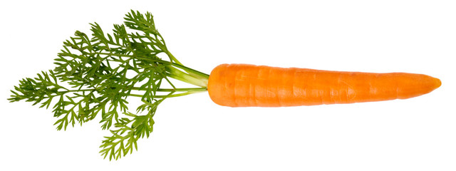
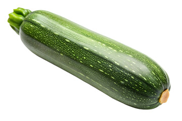
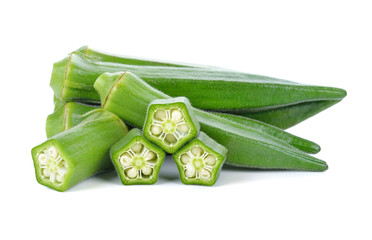

$10
Tomato
1kg
The tomato (US: /təmeɪtoʊ/, UK: /təmɑːtoʊ/), Solanum lycopersicum, is a plant
whose fruit is an edible berry that is eaten as a vegetable. The tomato is a member of the nightshade
family that includes tobacco, potato, and chili peppers. It originated from and was domesticated in
western South America. It was introduced to the Old World by the Spanish in the Columbian exchange in
the 16th century.

$13
Brinjal
1kg
Eggplant, aubergine, brinjal, or baigan is a plant species in the nightshade family
Solanaceae. Solanum melongena is grown worldwide for its edible fruit. Most commonly purple, the spongy,
absorbent fruit is used in several cuisines. Typically used as a vegetable in cooking, it is a berry by
botanical definition

$10
Carrot
1kg
The carrot (Daucus carota subsp. sativus) is a root vegetable, typically orange in
colour, though heirloom variants including purple, black, red, white, and yellow cultivars exist, all of
which are domesticated forms of the wild carrot, Daucus carota, native to Europe and Southwestern Asia.

$10
Tomato
1kg
Cucumber is a tool for running automated acceptance tests
written in a behavior driven development style.
One of its wonderful main features is the ability to execute
plain text functional description (written in language named Gherkin)
as automated tests.

$10
Lady Finger
1kg
Okra, Abelmoschus esculentus, known in some English-speaking countries as lady's
fingers, is a flowering plant in the mallow family native to East Africa. Cultivated in tropical,
subtropical, and warm temperate regions around the world for its edible green seed pods, okra is
featured in the cuisines of many countries